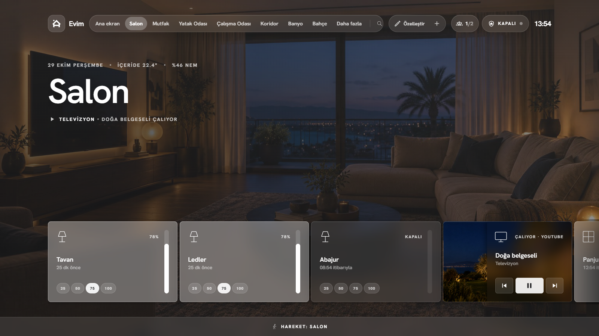
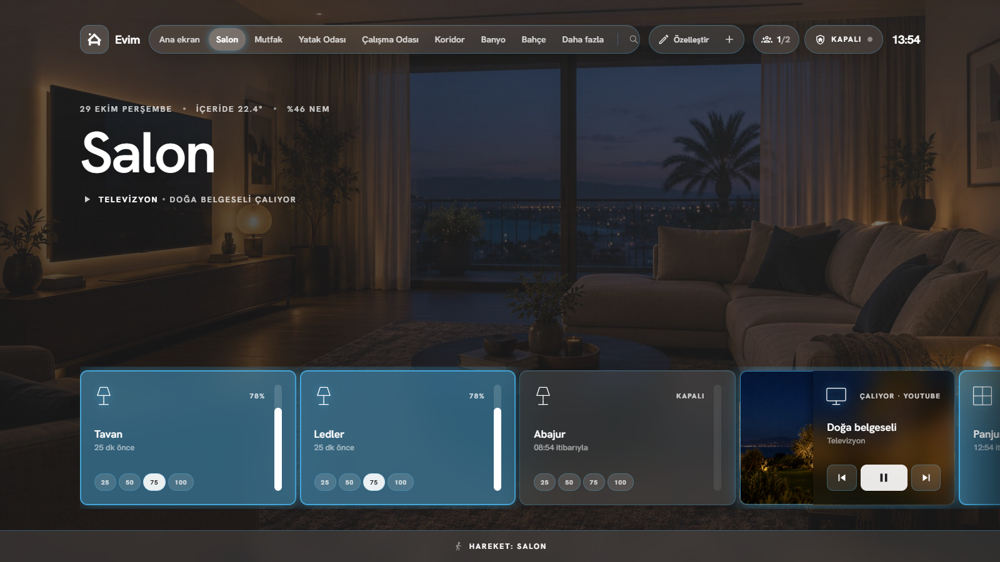
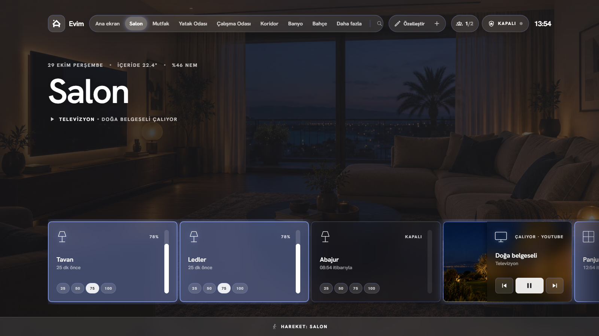
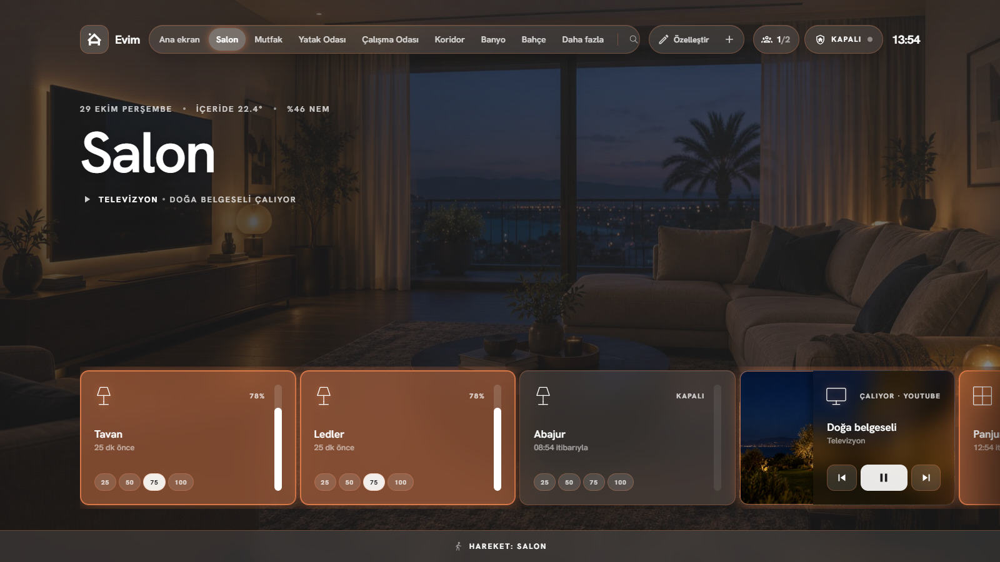
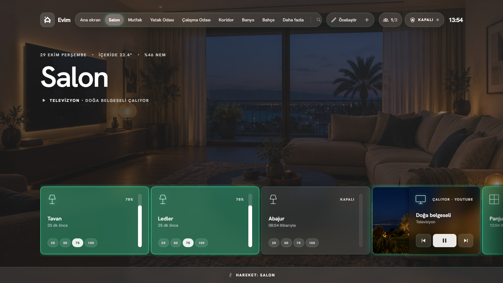
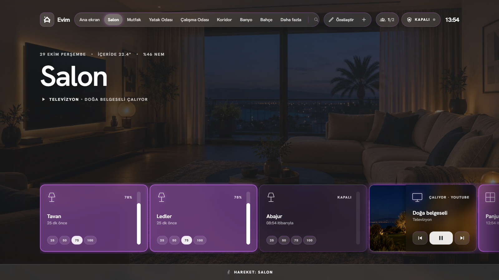
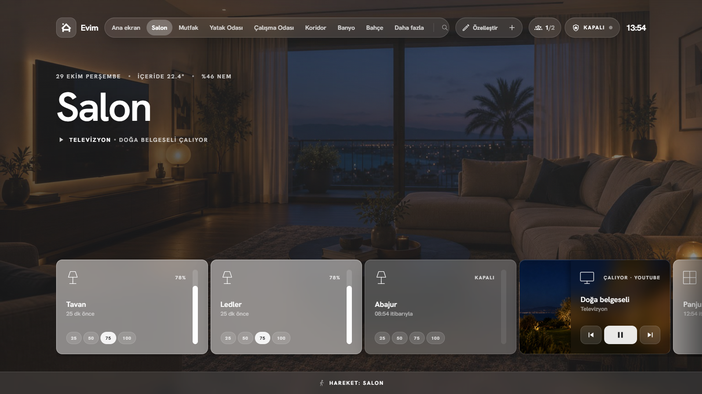

Evim Nova
Evin. Tek ekranda.

Canlı kartlar. Animasyonlu kombi ve klima.
7 tema. Tek dokunuş.







Cebinde de.


Alarm çalınca, ekran seninle.

Telefon. Tablet. Duvar.


Evim Nova
Home Assistant için ücretsiz, açık kaynak panel
github.com/turkerkirgin/evim-nova